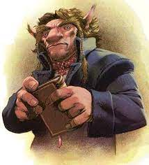
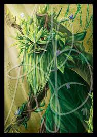

Both major and minor plots of The Wheel of Time are driven by the age-old fantasy genre theme of the battle between good and evil. The appearance, purpose and behavior of the creatures that inhabit this rigid dichotomy make their affiliations quite clear.
The various creatures that are of the Light are generally representative of wisdom, loyalty and nature.
| Name | Appearance | Description |
|---|---|---|
|  |
|
The Ogier are known for their great size, their long lives, and their love for verbose conversation. They are known as great scholars and stonemasons, and have a great respect for nature and peace in their daily lives. |
| Nym |  |
A construct of the Aes Sedai from the Age of Legends who had the ability to use the One Power for the benefit of plants and growing things. |